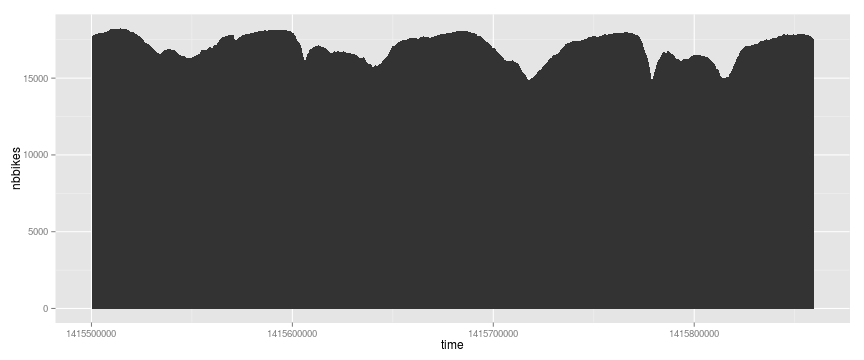
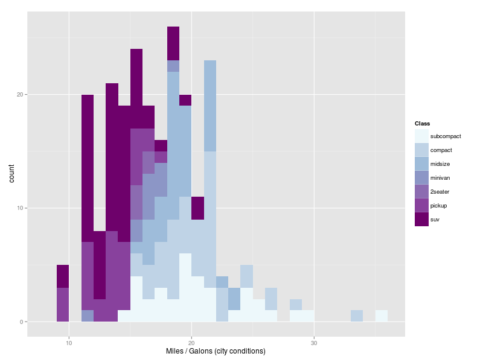

Code :
ggplot()+geom_bar(data=gg,aes(x=manufacturer,y=cty))+ scale_x_discrete("Manufacturer")+ scale_y_continuous("Miles / Gallon (City conditions)")
Ordre ? bar chart trié
Code :
gg$manufacturer=factor(gg$manufacturer,levels=gg$manufacturer[order(gg$cty)]) ggplot()+geom_bar(data=gg,aes(x=manufacturer,y=cty))+ scale_x_discrete("Manufacturer")+ scale_y_continuous("Miles / Gallon (City conditions)")
Horizontal ?
Code :
gg$manufacturer=factor(gg$manufacturer,levels=gg$manufacturer[order(gg$cty)]) ggplot()+geom_bar(data=gg,aes(x=manufacturer,y=cty))+ scale_x_discrete("Manufacturer")+ scale_y_continuous("Miles / Gallon (City conditions)")+coord_flip()
2 variables catégorielles et
une quantité
Ex :
consomation par type de véhicule et type de moteur
et
une quantité
Ex :
consomation par type de véhicule et type de moteur
Groupes , facettes
gg=aggregate(mpg$cty,list(mpg$class,mpg$cyl),mean) names(gg)=c("class",'cyl',"cty") ggplot()+geom_bar(data=gg,aes(x=class,y=cty))+ scale_x_discrete("Manufacturer")+ scale_y_continuous("Miles / Gallon (City conditions)")+ facet_grid( ~ cyl)+ theme(axis.text.x=element_text(angle=90))
Double encodage ?
ggplot()+geom_bar(data=gg,aes(x=class,y=cty,fill=class))+ scale_x_discrete("Manufacturer")+ scale_y_continuous("Miles / Gallon (City conditions)")+ facet_grid(. ~ cyl)+ theme(axis.text.x=element_text(angle=90))
Variante ?
Code :
ordlev=aggregate(mpg$cty,list(mpg$class),mean) levs=rev(as.character(ordlev$Group.1[order(ordlev$x)])) gg$class_permuted=factor(gg$class,levels=levs) gg$ctyR=round(gg$cty)
ggplot()+geom_tile(data=gg,aes(x=class_permuted,y=factor(cyl,levels=4:8), fill=cut(cty,c(seq(11,23,by=2)))))+ scale_x_discrete("Class")+ scale_y_discrete("# cylindres",breaks=4:8)+ scale_fill_brewer(palette="PRGn","Consomation")+ geom_text(data=gg,aes(x=class_permuted,y=factor(cyl,levels=4:8),label=ctyR))+theme_bw()
Variante ?

Code :
gg=aggregate(mpg$cty,list(mpg$manufacturer,mpg$class),mean)
names(gg)=c("manufacturer","class","cty")
ordlev=aggregate(mpg$cty,list(mpg$class),mean)
levs=rev(as.character(ordlev$Group.1[order(ordlev$x)]))
gg$class_permuted=factor(gg$class,levels=levs)
ordlev=aggregate(mpg$cty,list(mpg$manufacturer),mean)
levs=as.character(ordlev$Group.1[order(ordlev$x)])
gg$manufacturer_permuted=factor(gg$manufacturer,levels=levs)
gg$ctyR=round(gg$cty)
ggplot()+geom_tile(data=gg,aes(x=class_permuted,y=manufacturer_permuted,
fill=cut(cty,c(seq(11,25,by=2)))))+
scale_x_discrete("Class")+
scale_y_discrete("Manufacturer")+
scale_fill_brewer(palette="PRGn","Consomation")+
geom_text(data=gg,aes(x=class_permuted,y=manufacturer_permuted,label=ctyR))+theme_bw()
La ligne :
1 variable numérique
en fonction du
temps
Données Vélib' aggrégées :
data=fromJSON(file="http://vlsstats.ifsttar.fr/data/temporalstats_Paris.json") gg=sapply(data,function(x){c(x$'_id',x$value$total_available_bikes)}) ggs=data.frame(head(t(gg),500)) names(ggs)=c('time','nbbikes')
Ordre naturel imposé par le temps
ggplot(data=ggs,aes(x=time,y=nbbikes))+geom_point()
Ordre naturel imposé par le temps
ggplot(data=ggs,aes(x=time,y=nbbikes))+geom_line()
Aspect ratio
ggplot(data=ggs,aes(x=time,y=nbbikes))+geom_line()
Aspect ratio
ggplot(data=ggs,aes(x=time,y=nbbikes))+geom_line()
Aspect ratio, 45°
Heuristic: use the aspect ratio that results in an average line slope of 45°.Cleveland, William S., Marylyn E. McGill, and Robert McGill. "The shape parameter of a two-variable graph." Journal of the American Statistical Association 83.402 (1988): 289-300.
Aire + Echelle
ggplot(data=ggs,aes(x=time,y=nbbikes))+geom_area()
Changement de point de vue
ggplot(data=ggs,aes(x=time,y=max(nbbikes)-nbbikes))+geom_area()
1 variable numérique
en fonction du
temps
+ catégories
Données Vélib par stations
data=fromJSON(file="http://vlsstats.ifsttar.fr/data/spatiotemporalstats_London.json")
Mise en forme
extract = function(x){data.frame( x$'_id', x$download_date,x$available_bikes )} gg=do.call(rbind,lapply(data,extract)) names(gg)=c('id','time','nbbikes')
Sélection de 3 stations
ggs =subset(gg,gg$id %in% c('383','610','701'))
ggplot(data=ggs,aes(x=time,y=nbbikes,group=id,color=factor(id)),size=2)+geom_line()
Line charts superposés
# selection d'une dizaine de stations ggs =subset(gg,gg$id %in% c('383','610','701','615','120','803','1000','11','160','450')) ggplot(data=ggs,aes(x=time,y=nbbikes,group=id,color=factor(id)),size=2)+geom_line()
Nombre de catégories ?
ggplot(data=ggs,aes(x=time,y=nbbikes,group=id,color=factor(id)),size=2)+ geom_line()+facet_grid(id ~ .)
Small multiples
2 variables numériques
+ catégories
Scatter plot + couleurs
ggplot(mpg)+geom_point(aes(x=cty,y=hwy,color=class))
3 variables numériques
+ catégories
Scatter plot + size + couleurs
ggplot(mpg,aes(x=cty,y=hwy,size=displ,color=class))+geom_point()
Scatter plot + size + couleurs ! échelle
ggplot(mpg,aes(x=cty,y=hwy,size=displ,color=class))+geom_point()+scale_area()
Taille des cercles : échelle aire ou rayon ?
Rayon
Aire
Principes :
Eviter de mentir,
Lie Factor
$$\textrm{Lie factor} = \frac{\textrm{visual effect size}}{\textrm{data effect size}}$$
Lie factor :
$$\textrm{data effect size} = \frac{27.5 - 18}{18} \times 100 = 53 \%$$Edward Tufte, The Visual Display of Quantitative Information, Cheshire, CT, Graphics Press, 2001, 2e éd. (1re éd. 1983)
Lie factor :
$$\textrm{visual effect size} = \frac{5.3 -0.6}{0.6} \times 100 = 783 \%$$Edward Tufte, The Visual Display of Quantitative Information, Cheshire, CT, Graphics Press, 2001, 2e éd. (1re éd. 1983)
Lie factor :
$$\textrm{Lie factor} = \frac{783}{53} = 14.8$$Edward Tufte, The Visual Display of Quantitative Information, Cheshire, CT, Graphics Press, 2001, 2e éd. (1re éd. 1983)
Lie factor : 9.4
Edward Tufte, The Visual Display of Quantitative Information, Cheshire, CT, Graphics Press, 2001, 2e éd. (1re éd. 1983)
Principes :
Augmenter la densité de données
$$\textrm{graph data density} = \frac{\textrm{number of entries in data matrix}}{\textrm{area of data display}}$$Data density :
Eviter les graphique à faible densité
Edward Tufte, The Visual Display of Quantitative Information, Cheshire, CT, Graphics Press, 2001, 2e éd. (1re éd. 1983)
Data density :
Meilleure densité de donnée
Edward Tufte, The Visual Display of Quantitative Information, Cheshire, CT, Graphics Press, 2001, 2e éd. (1re éd. 1983)
Bonnes pratiques :
- éviter de mentir !
- faire des graphiques riches
- avec des encodages adaptés
- de bonnes échelles, (!couleurs, !aires)
- des axes labelisés
- ordre des facteurs
- aspect ratio
- format d'enregistrements pdf, svg // png,jpg
ggplot
gg = grammar of graphics
- "The Grammar of Graphics" (Wilkinson, Annand and Grossman, 2005)
- grammaire → même type de description pour des graphique différents
ggplot
Composants de la grammaires :
ex : f(data) → x position, y position, size, shape, color
ex : points, lines, bars, texts
ex : f([0, 100]) → [0, 5] px
ex : segmentation des données suivant un ou plusieurs facteurs
ex : moyenne, comptage, régression
ggplot
Création d'un graphique :
! Données toujours sous forme de data.frame bien formatées
ggplot, géométries
Création d'un graphique :
+geom_line()aes(x=a,y=b,...)Exemple
library(ggplot2)
ggplot(mpg)+geom_point(aes(x=cty,y=hwy,color=manufacturer,shape=factor(cyl)))
ggplot(mpg,aes(x=cty,y=hwy,color=manufacturer,shape=factor(cyl)))+geom_jitter()
ggplot(mpg,aes(x=cty,y=hwy,color=manufacturer,shape=factor(cyl)))+geom_point()

ggplot(mpg,aes(x=cty,y=hwy,color=manufacturer,shape=factor(cyl)))+geom_jitter()
ggplot(mpg,aes(x=cty,y=hwy,color=manufacturer,shape=factor(cyl)))+geom_jitter()+
geom_abline(intercept=reg$coefficients[1],slope=reg$coefficients[2],color="red")
ggplot(mpg,aes(x=cty,fill=manufacturer))+geom_histogram(binwidth=2)
ggplot(mpg,aes(y=cty,x=manufacturer))+geom_violin()
ggplot, échelles
Création d'un graphique :
+geom_line()aes(x=a,y=b,...)scale_fill_brewer(palette=3,type="qual")
scale_x_continuous(limits=c(0,45),breaks=seq(0,45,2))Exemple
ggplot(mpg,aes(x=cty,y=hwy,color=manufacturer,shape=factor(cyl)))+geom_jitter()+
scale_x_continuous(limits=c(0,45),breaks=seq(0,45,2))
ggplot(mpg,aes(x=cty,fill=manufacturer))+geom_histogram(binwidth=2)
+scale_fill_brewer(palette=3,type="qual")
ggplot(mpg,aes(x=cty,y=hwy,color=manufacturer,shape=factor(cyl)))+geom_jitter()+
scale_x_continuous(limits=c(0,45),breaks=seq(0,45,2))
Echelles
de
couleurs
http://colorbrewer2.org/
ggplot(mpg,aes(x=cty,fill=factor(class)))+geom_histogram(binwidth=1)
+scale_fill_brewer("Class",palette=3,type="qual")
+scale_x_continuous("Miles / Galons (city conditions)")
mpg$class_permuted=factor(mpg$class,levels=levels(mpg$class)[c(6,2,3,4,1,5,7)])
ggplot(mpg,aes(x=cty,fill=factor(class_permuted)))+geom_histogram(binwidth=1)
+scale_fill_brewer("Class",palette=3,type="qual")
+scale_x_continuous("Miles / Galons (city conditions)")
Ordonnée ? Quel ordre ?
a priori
mpg$class_permuted=factor(mpg$class,levels=levels(mpg$class)[c(6,2,3,4,1,5,7)])
moyenne des consomations en ville
ctyByClass=aggregate(mpg$cty,list(mpg$class),mean)
ctyByClass[order(ctyByClass$x),]
levs=as.character(rev(ctyByClass$Group.1[order(ctyByClass$x)]))
mpg$class_permuted=factor(mpg$class,levels=levs)
mediane des consomations en ville
ctyByClass=aggregate(mpg$cty,list(mpg$class),median)
ctyByClass[order(ctyByClass$x),]
levs=as.character(rev(ctyByClass$Group.1[order(ctyByClass$x)]))
mpg$class_permuted=factor(mpg$class,levels=levs)
a priori
mpg$class_permuted=factor(mpg$class,levels=levels(mpg$class)[c(6,2,3,4,1,5,7)])
ggplot(mpg,aes(x=cty,fill=factor(class_permuted)))+geom_histogram(binwidth=1)
+scale_fill_brewer("Class",palette=3,type="qual")
+scale_x_continuous("Miles / Galons (city conditions)")
tri / la moyenne
ggplot(mpg,aes(x=cty,fill=factor(class_permuted)))+geom_histogram(binwidth=1)
+scale_fill_brewer("Class",palette=3,type="qual")
+scale_x_continuous("Miles / Galons (city conditions)")
tri / la mediane
ggplot(mpg,aes(x=cty,fill=factor(class_permuted)))+geom_histogram(binwidth=1)
+scale_fill_brewer("Class",palette=3,type="qual")
+scale_x_continuous("Miles / Galons (city conditions)")
Autre proposition ?
ggplot(mpg,aes(y=cty,x=class_permuted))+geom_boxplot()+scale_x_discrete("Class")
Autre proposition ?
ggplot(mpg,aes(y=cty,x=class_permuted))+geom_violin()+scale_x_discrete("Class")
ggplot, facettes
Création d'un graphique :
+geom_line()aes(x=a,y=b,...)scale_fill_brewer(palette=3,type="qual")
scale_x_continuous(limits=c(0,45),breaks=seq(0,45,2))facet_grid(. ~ cyl)ggplot(mpg,aes(x=cty,fill=factor(class_permuted)))+
geom_histogram(binwidth=1,aes(x=cty,fill=class_permuted))+
scale_fill_brewer("Class",palette=3,type="seq")+
scale_x_continuous("Miles / Galons (city conditions)")+
facet_grid(. ~ class_permuted)
ggplot(mpg,aes(x=cty,fill=factor(class)))+geom_histogram(binwidth=1)+facet_grid(. ~ cyl)
+scale_fill_brewer(palette=3,type="qual")
ggplot, stats
Création d'un graphique :
+geom_line()aes(x=a,y=b,...)scale_fill_brewer(palette=3,type="qual")
scale_x_continuous(limits=c(0,45),breaks=seq(0,45,2))stat_density2d()ggplot(mpg,aes(y=cty,x=hwy))+geom_point(color="blue")+stat_density2d()
ggplot(mpg,aes(y=cty,x=hwy))+geom_point(color="blue")+stat_smooth()
install.packages("hexbin")
ggplot(mpg,aes(y=cty,x=hwy))+stat_binhex()
Données spatiales
les cartes
install.packages("ggmap")
Données OSM via overpass api
Les bars et restaurants de Rennes
Données OSM via overpass api
Les bars et restaurants de Rennes
Mise en forme des données geoJSON
library(rjson)
json = fromJSON(file="./export.geojson")
extractCenter = function(x){
apply(matrix(unlist(x$geometry$coordinates),2),1,mean)
}
data = lapply(json$features, extractCenter)
data = data.frame(t(matrix(unlist(data),2)))
names(data)=c('long','lat')
ggmap
les bases : get_map(...), ggmap(...)
library(ggmap)
map = get_map("Rennes",14)
ggmap(map)+geom_point(data=data,aes(x=long,y=lat))
ggmap(map)+stat_density2d(data=data,aes(x=long,y=lat))
ggmap(map)+geom_point(data=data,aes(x=long,y=lat))
ggmap(map)+stat_density2d(data=data,aes(x=long,y=lat))
Un exemple un peu plus complet
mytheme= theme(axis.line=element_blank(),
axis.text.x=element_blank(),
axis.text.y=element_blank(),
axis.ticks=element_blank(),
axis.title.x=element_blank(),
axis.title.y=element_blank(),
panel.background=element_blank(),
panel.border=element_blank(),
panel.grid.major=element_blank(),
panel.grid.minor=element_blank(),
plot.background=element_blank())
mapbw = get_map(location=apply(data,2,mean),14,color="bw")
ggmap(mapbw)+stat_density2d(data=data,aes(x=long,y=lat),h=0.003)+
stat_density2d(data=data,aes(long,lat,fill=..level..,alpha=..level..)
,h=0.003,geom = "polygon")+mytheme
ggmap(mapbw)+stat_density2d(data=data,aes(x=long,y=lat))+
stat_density2d(data=data,aes(long,lat,fill=..level..,alpha=..level..),geom="polygon")+
mytheme
ggmap(mapbw)+stat_density2d(data=data,aes(x=long,y=lat),h=0.003)+
stat_density2d(data=data,aes(long,lat,fill=..level..,alpha=..level..)
,h=0.003,geom = "polygon")+mytheme
ggmap(mapbw)+stat_density2d(data=data,aes(x=long,y=lat),h=0.003,color="black")+
stat_density2d(data=data,aes(long,lat,fill=..level..,alpha=..level..)
,h=0.003,geom = "polygon")+scale_fill_gradientn(colours=c('black','red','white'))+
mytheme
Gestion de l'échelle
# modification du theme pour intégrer une légende
mytheme=theme(legend.justification=c(0,0),legend.position=c(0,0.05))
# selection des données dans le cadre
library(sp)
datao=data[spDists(as.matrix(data,ncols=2),matrix(center,1,2),longlat=T)<1.5,]
# calcul de la déformation en x et y
x=rbind(c(center[1]+1,center[2]),c(center[1],center[2]+1))
dists=spDists(x=x,y=matrix(center,1,2),longlat=TRUE)
# carte avec échelle compréhensible
ggmap(mapbw)+stat_density2d(data=datao,aes(x=long,y=lat),h=0.3*1/dists,color="black")+
stat_density2d(data=datao,aes(long,lat,fill=..level..,alpha=..level..),
h=0.3*1/dists,geom = "polygon")+
scale_fill_gradientn("Densité de \nbars, restaurant / Ha",
colours=c('black','red','white'),
breaks=seq(0,2.5,by=0.5)/dim(datao)[1]*prod(dists)*100,
labels=seq(0,2.5,by=0.5),
limits=c(0,3*prod(dists)/dim(datao)[1]*100))+
scale_alpha_continuous(guide="none")+mytheme
Cartes
Choroplèthes
# lecture des données INSEE
options(stringsAsFactors=FALSE)
data=read.csv("./base-cc-logement-2011.csv",header=T)
# selection des données d'ile de france
dataIDF=data[data$REG==11,]
# calcul de la variable d'intérêt
dataIDF$RP11percent=dataIDF$P11_RP/dataIDF$P11_LOG*100
# lecture du fond de carte
library(sp)
library(rgeos)
library(maptools)
communes=readShapeSpatial("./communes-plus-20140630-100m.shp",
proj4string=CRS("+proj=longlat +ellps=WGS84 +datum=WGS84 +no_defs"))
# selection des données d'ile de france
communesIDF=subset(communes,communes@data$code_reg==11)
# mise en forme pour ggplot
gg = fortify(communesIDF,region="insee")
ggdata=merge(gg,dataIDF,by.x="id",by.y="CODGEO")
pe=order(ggdata$group,ggdata$order)
ggdata=ggdata[pe,]
# creation de la carte
ggplot(ggdata,aes(x=long,y=lat,group=group,fill=RP11percent))+geom_polygon()+coord_map()
Code :
dataIDF$RP11percentQ=cut(dataIDF$RP11percent,quantile(dataIDF$RP11percent,seq(0,1,0.2)))
ggdata=merge(gg,dataIDF,by.x="id",by.y="CODGEO")
pe=order(ggdata$group,ggdata$order)
ggdata=ggdata[pe,]
ggplot(ggdata,aes(x=long,y=lat,group=group,fill=RP11percentQ))+geom_polygon()
+scale_fill_brewer("% Résidences Principales",palette="BuGn")+coord_map()+mytheme
Links :
.. Exercices ..
Reprendre les échelles, légendes de cette figure
Réaliser une bubble carte de la disponibilité des vélos
http://vlsstats.ifsttar.fr/data/input_Paris.jsonRéaliser une choroplèthe du taux de naissances / départements
../Donnees/donnees_naissances_morts_communes.csv../Donnees/departements-20140306-50m-shp.zip